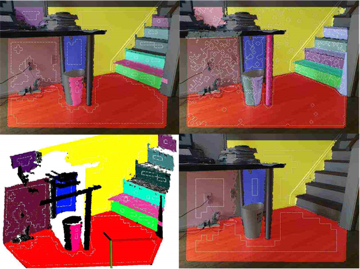
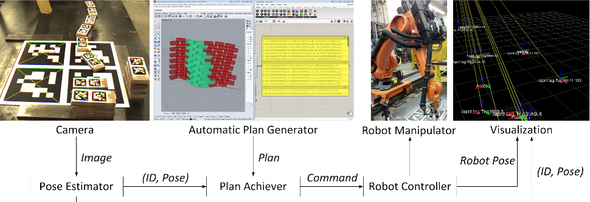
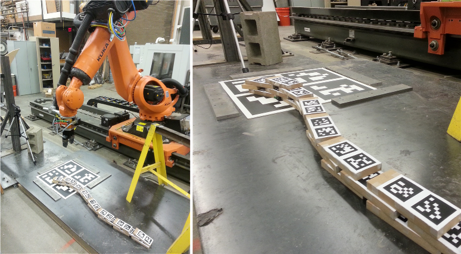
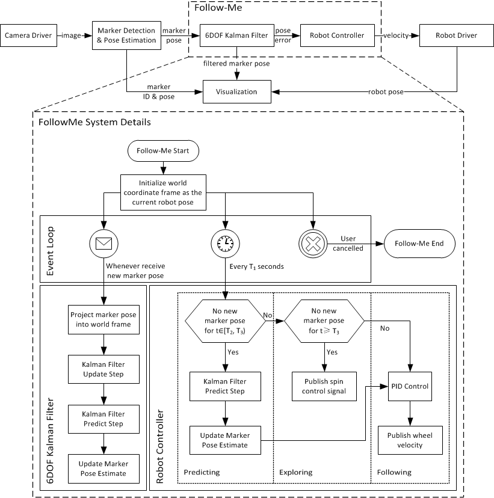
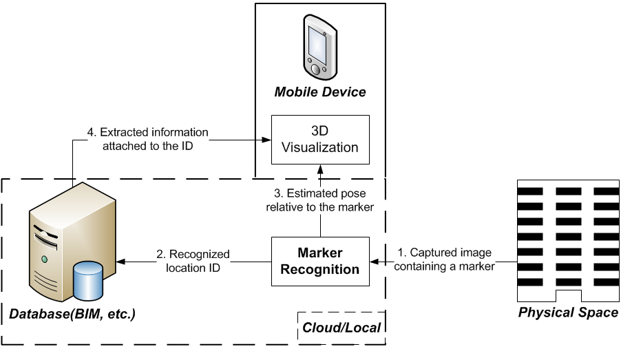
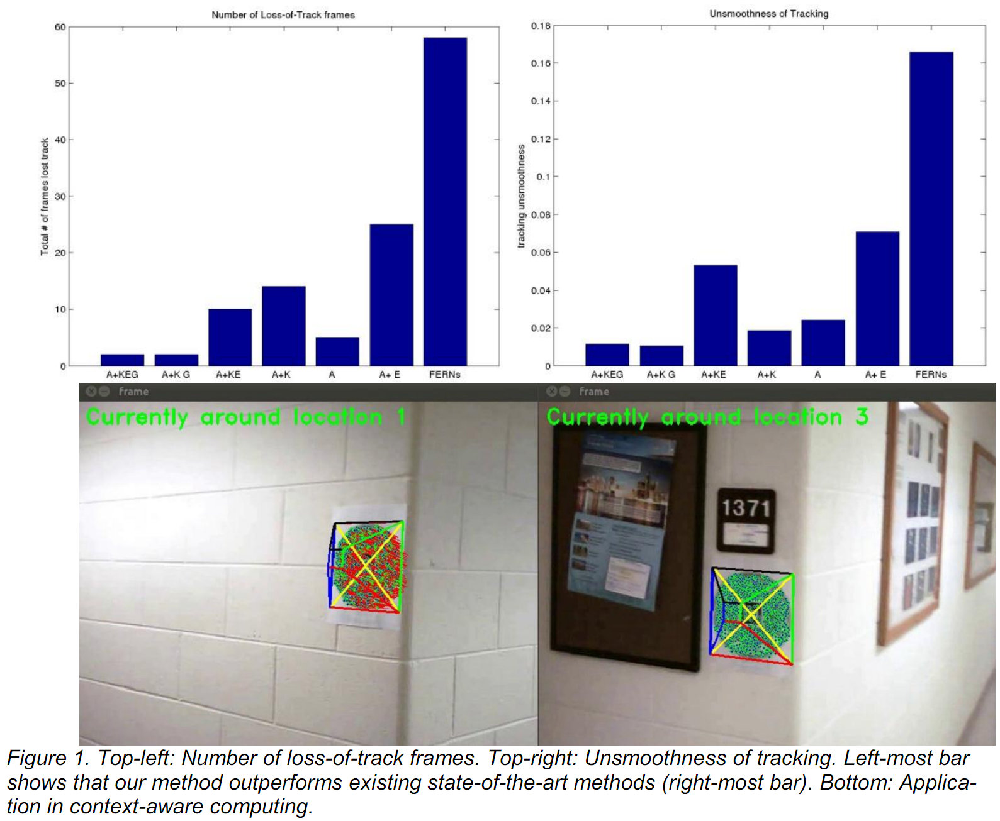
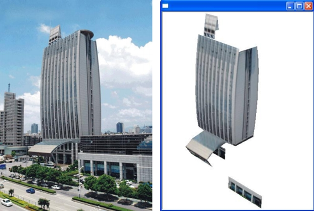

<table class="bordered" style="border-style: dotted;">
	<tbody>
		<tr id="PEAC"><!-- PEAC -->
			<td style="width: 40%; text-align: center;"></td>
			<td rowspan="2" style="width: 60%; text-align: center; vertical-align:top;">
				<p><h3>Fast Plane Extraction in Organized Point Clouds<br>Using Agglomerative Hierarchical Clustering</h3></p>
				<p style="text-align: justify;">Real-time plane extraction in 3D point clouds is crucial to many robotics applications. We present a novel algorithm for reliably detecting multiple planes in real time in organized point clouds obtained from devices such as Kinect sensors. By uniformly dividing such a point cloud into non-overlapping groups of points in the image space, we first construct a graph whose node and edge represent a group of points and their neighborhood respectively. We then perform an agglomerative hierarchical clustering on this graph to systematically merge nodes belonging to the same plane until the plane fitting mean squared error exceeds a threshold. Finally we refine the extracted planes using pixel-wise region growing. Our experiments demonstrate that the proposed algorithm can reliably detect all major planes in the scene at a frame rate of more than <b>35Hz for 640x480 point clouds</b>, which to the best of our knowledge is much faster than state-of-the-art algorithms.</p>
				<p style="text-align: justify;">See our <a href="publication.html#feng2014ahc">ICRA 2014 paper</a>, <a href="upload/2014.icra.Feng+Taguchi+Kamat.pdf"> and presentation slides</a>.</p>
				<p style="text-align: justify;"><b>Finally, our C++ implementation with a Matlab interface are released here: <a href="http://www.merl.com/research/license">PEAC</a>.</b></p>
			</td>
			<tr>
				<td style="width: 40%; text-align: center;"><div class="videoWrapper"><iframe allowfullscreen="" frameborder="0" src="http://www.youtube.com/embed/1a1ehnW7lkc"></iframe></div></td>
			</tr>
		</tr>
		<tr id="Kuka"><!-- Kuka -->
			<td style="width: 40%; text-align: center;"></td>
			<td rowspan="3" style="width: 60%; text-align: center; vertical-align:top;">
				<p><h3>Towards Autonomous Robotic In-Situ Assembly<br>on Unstructured Construction Sites Using Monocular Vision</h3></p>
				<p style="text-align: justify;">Unlike robotics in the manufacturing industry, on-site construction robotics has to consider and address two unique challenges: 1) the rugged, evolving, and unstructured environment of typical work sites; 2) the reversed spatial relationship between the product and the manipulator, i.e. the manipulator has to travel to and localize itself at the work face, rather than a partially complete product arriving at an anchored manipulator. The presented research designed and implemented algorithms that address these challenges and enable autonomous robotic assembly of freeform modular structures on construction sites. Building on the authors鈥?previous work in computer-vision-based pose estimation, the designed algorithms enable a mobile robotic manipulator to: 1) autonomously identify and grasp prismatic building components (e.g., bricks, blocks) that are typically non-unique and arbitrarily stored on-site; and 2) assemble these components into pre-designed modular structures. The algorithms use a single camera and a visual marker-based metrology to rapidly establish local reference frames and to detect staged building components. Based on the design of the structure being assembled, the algorithms automatically determine the assembly sequence. Implemented using a 7-axis KUKA KR100 robotic manipulator, the presented robotic system has successfully assembled various structures autonomously as shown in Figure 1, demonstrating the designed algorithms鈥?effectiveness in autonomous on-site construction robotics applications.</p>
				<p style="text-align: justify;">See our <a href="publication.html#feng2014kuka">ISARC 2014 paper</a>, <a href="upload/2014.isarc.ppt.Feng et al.pdf"> and presentation slides</a>.</p>
				<p style="text-align: justify;">We won a Best Paper Award of ISARC 2014.</p>
			</td>
			<tr>
				<td style="width: 40%; text-align: center;"></td>
			</tr>
			<tr>
				<td style="width: 40%; text-align: center;"><div class="videoWrapper"><iframe allowfullscreen="" frameborder="0" src="http://www.youtube.com/embed/fj7AXRpj97o?rel=0"></iframe></div></td>
			</tr>
		</tr>
		<tr id="FollowMe"><!-- FollowMe -->
			<td style="width: 40%; text-align: center;"></td>
			<td rowspan="2" style="width: 60%; text-align: center; vertical-align:top;">
				<p><h3>Human-Robot Integration For Pose Estimation And<br>Semi-Autonomous Navigation On Unstructured Construction Sites</h3></p>
				<p style="text-align: justify;">Compared to widespread successful deployment of robotic manipulators for repetitive and hazardous tasks in related industries such as manufacturing, the construction industry has achieved relatively limited benefits from robotics and soft automation. Unlike manufacturing, where robotic solutions benefit from the structured layout of the environment (e.g., factory assembly line), construction robots face unique challenges that arise from the rugged, dynamic, and unstructured environment of the work site, as well as the uncertainty and evolving sequence of occurring on-site events. This challenges any intended construction robots to not only replicate basic human motion, but also be capable of sensing and adapting to environmental changes, and making decisions based on the evolving state of the environment. Building upon recent advancements in robotic mapping, computer vision, and object recognition, the authors propose to introduce autonomous behavior at the basic task level for on-site construction robots to address these challenges in a flexible and extensible manner. This paper reports the outcome of the first phase of this research - a structured methodology for improved design and development of basic task automations - and focuses on algorithms developed for mobile robot navigation and relative pose estimation. The algorithms are implemented on a prototype mobile robotic platform, and evaluated in several experimental scenarios.</p>
				<p style="text-align: justify;">See our <a href="publication.html#feng2013followme">ISARC 2013 paper</a>.</p>
			</td>
			<tr>
				<td style="width: 40%; text-align: center;"><div class="videoWrapper"><iframe allowfullscreen="" frameborder="0" src="http://www.youtube.com/embed/6qbPpwqaBto?list=PLk-jR0Q-VfWA-gtDglg_tYMVJfXvs9sbb"></iframe></div></td>
			</tr>
		</tr>
		<tr id="MARvigator"><!-- MARvigator -->
			<td style="width: 40%; text-align: center;"></td>
			<td rowspan="2" style="width: 60%; text-align: center; vertical-align:top;">
			<p><h3>MARvigator: Augmented Reality Markers as Spatial Indices<br>for Indoor Mobile AEC/FM Applications</h3></p>
			<p style="text-align: justify;">This paper presents a new methodology for utilizing Augmented Reality (AR) fiducial markers on mobile devices (smart phone/tablet) for indoor Architecture, Engineering, Construction, and Facilities Management (AECFM) applications such as navigation and inspection. On one hand, previous efforts on such applications focused mainly on exploring traditional non-visual-sensor-based methods to track user&#39;s position continuously, ignoring the advantage that in most of the built environment, human inspectors can easily navigate themselves to destinations given that they can make correct decisions at a set of discrete critical spatial locations (corner of hallway, stairs etc.). On the other hand, traditionally fiducial markers are extensively used to recover user&#39;s pose and thus serve as table-top AR display surface, benefiting from its cost-efficiency and high flexibility. A different view that combines these two observations is to attach these markers at critical locations whose global positions and orientations are known in advance, treating markers as spatial indices which help the automatic identification of key locations. Upon recognizing the marker, as well as estimating the relative pose between the user and marker, user&#39;s pose in the global coordinate frame can be calculated. Then decisions can be automatically made and users are guided to their destinations by 3D graphical instructions. An example application for complex indoor environment way-finding is built on Android platform and tested which demonstrates the efficiency of the proposed method.</p>
			<p style="text-align: justify;">See our <a href="publication.html#feng2012marvigator">ConVR 2012 paper</a>.</p>
			</td>
			<tr>
				<td style="width: 40%; text-align: center;"><div class="videoWrapper"><iframe allowfullscreen="" frameborder="0" src="http://www.youtube.com/embed/TdyygfTvLZQ?rel=0"></iframe></div></td>
			</tr>
		</tr>
		<tr id="KEG"><!-- KEG -->
			<td style="width: 40%; text-align: center;"></td>
			<td rowspan="2" style="width: 60%; text-align: center; vertical-align:top;">
			<p><h3>KEG Plane Tracker for AEC Automation Applications</h3></p>
			<p style="text-align: justify;">In this article, we propose a new registration algorithm and computing framework, the KEG tracker, for estimating a camera鈥檚 position and orientation for a general class of mobile context-aware applications in Architecture, Engineering, and Construction (AEC). By studying two classic natural marker-based reg-istration algorithms, Homography-from-detection and Homography-from-tracking, and by overcoming their specific limitations of jitter and drift, our method applies two global constraints (geometric and appearance) to prevent tracking errors from propagating between con-secutive frames. The proposed method is able to achieve an increase in both stability and accuracy, while being fast enough for real-time applications. Experiments on both synthesized and real-world test cases demonstrate that our method is superior to existing state-of-the-art registration algorithms. The article also explores several AEC applications of our method in context-aware com-puting and desktop-augmented reality.</p>
			<p style="text-align: justify;">See our <a href="publication.html#feng2013keg">CACAIE 2013 paper</a>.</p>
			</td>
			<tr>
				<td style="width: 40%; text-align: center;"><div class="videoWrapper"><iframe allowfullscreen="" frameborder="0" src="http://www.youtube.com/embed/8Y8Mlh7jhsY?rel=0"></iframe></div></td>
			</tr>
		</tr>
		<tr id="SSVR"><!-- SSVR -->
			<td style="width: 40%; text-align: center;"></td>
			<td rowspan="2" style="width: 60%; text-align: center; vertical-align:top;">
			<p><h3>Semi-Auto SVR: Semi-Automatic Single View Reconstruction</h3></p>
			<p style="text-align: justify;">We presents a novel algorithm that enables the semi-automatic reconstruction of man-made structures (e.g. buildings) into piecewise planar 3D models from a single image, allowing the models to be readily used for data acquisition in 3D GIS or in other virtual or augmented reality applications. Contrary to traditional labor intensive but accurate Single View Reconstruction (SVR) solutions that are based purely on geometric constraints, and recent fully automatic albeit low-accuracy SVR algorithms that are based on statistical inference, the presented method achieves a compromise between speed and accuracy, leading to less user input and acceptable visual effects compared to prior approaches. Most of the user input required in the presented approach is a line drawing that represents an outline of the building to be reconstructed. Using this input, the developed method takes advantage of a newly proposed Vanishing Point (VP) detection algorithm that can simultaneously estimate multiple VPs in an image. With those VPs, the normal direction of planes which are projected onto the image plane as polygons in the line drawing can be automatically calculated. Following this step, a linear system similar to traditional SVR solutions can be used to achieve 3D reconstruction. Experiments that demonstrate the efficacy and visual effects of the developed method are also described.</p>
			<p style="text-align: justify;">See our <a href="publication.html#feng2010ssvr">ConVR 2010 paper</a>.</p>
			</td>
			<tr>
				<td style="width: 40%; text-align: center;"><div class="videoWrapper"><iframe allowfullscreen="" frameborder="0" src="http://www.youtube.com/embed/rdKTM0NR--s?rel=0"></iframe></div></td>
			</tr>
		</tr>
	</tbody>
</table>
